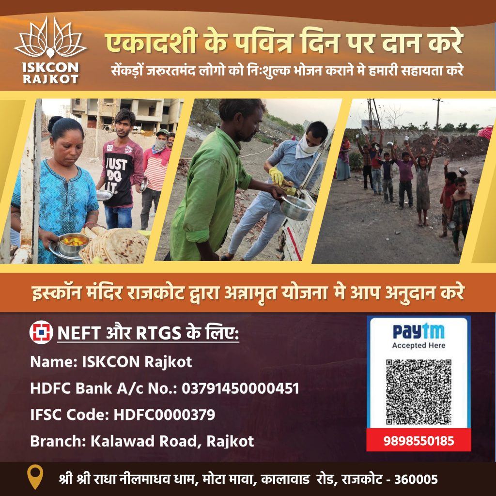

About Iskcon Rajkot
ISKCON Rajkot Sri Sri Radha Neelmadhav Dham is a Hare Krishna temple, community, and ashram dedicated to the practice of bhakti-yoga or loving service to Krishna, the Supreme Personality of Godhead. We are a branch of the International Society for Krishna Consciousness (ISKCON), a worldwide spiritual movement founded by His Divine Grace A.C. Bhaktivedanta Swami Prabhupada, in New York City in 1966. Under the guidance of His Holiness Mahavishnu Goswami Maharaj in 2003, this center was inaugurated by the hands of The Chief Minister of Gujarat Sri Narendra Modi and Alfred Ford (Ambarish Das) an owner of the Ford Auto motors-US.
Glory Of Saurashtra Temple
The New Project of Sri Sri Radha Neelmadhav Dham, namely Glory Of Saurashtra was inaugurated on 14th April 2019 Sunday on the holy day of Sri Ramnavmi by the hands of Hon'ble Chief Minister of Gujarat Sri Vijaybhai Rupani, and Hon'ble Governor of Karnataka Sri Vajubhai Vala.

About
Srila Prabhupada
For millennia the teachings and the rich culture of bhakti-yoga, or Krishna Consciousness, had been hidden within the borders of India. Today, millions around the globe express their gratitude to Srila Prabhupada for revealing the timeless wisdom of bhakti to a world. Born as Abhay Charan De on September 1, 1896, in Calcutta, as a young man he joined Mahatma Gandhi's civil disobedience movement. In 1922, a meeting with the prominent scholar and spiritual leader, Srila Bhaktisiddhanta Sarasvati, proved to be most influential on young Abhay's future calling…
Srila Bhaktisiddhanta was a leader in the Gaudiya Vaishnava community, a monotheistic tradition within the broader Hindu culture. At their very first meeting, Srila Bhaktisiddhanta asked Abhay to bring the teachings of Lord Krishna to the English-speaking world. Deeply moved by his devotion and wisdom, Abhay became a disciple of Srila Bhaktisiddhanta in 1933, and resolved to carry out his mentor’s request. Abhay, later known by the honorific A.C. Bhaktivedanta Swami Prabhupada, spent the next 32 years preparing for his journey west. Read More
About HH Mahavishnu Goswami Maharaj
His Holiness Srila Mahavishnu Goswami Maharaj was born in the outskirts of Mumbai in 1919 on the auspicious day of Dattātreya Purnima in the month of mārga-śīrṣa [November-December]. He appeared in an eight generation Vaishnava family. At the tender age, he began studying the holy scriptures of Srimad Bhagavat-gita and Srimad Bhagavatam in earnest. He is highly educated having obtained a masters degree in both Sanskrit and English and is equally conversant in Marathi, Gujarati, Hindi, Urdu and the Gujarati dialect Kachhi. His burning desire to realize God was finally answered, when he met Srila Prabhupada, the founder acharya of the International Society of Krsna Consciousness (ISKCON). Maharaj first took darshan of Srila Prabhupāda in 1973 when, as President of the London Gujarati Community Society, he invited Prabhupäda to be guest-of-honour at the society’s annual function. There Srila Prabhupada’s lecture marked the turning point in Maharaj’s life. Srila Prabhupāda had stated that whenever we meet our friends, we ask them so many material things, like how is your business, your family etc. But this is simply a waste of time. If we really cared for them, then when we meet them, we should ask them how far they have progressed, since we last met, in the matter of stopping the repetition of the cycle of birth and death. Since that profound meeting, H H Mahāvishnu Goswami Maharaj has dedicated his life to the rigorous study of Śrīmad-Bhāgavatam. Read More
Latest Donation Opportunities

Donate On This Auspicious Occasion Of Ekadasi
NEFT/RTGS – ISKCON Rajkot
HDFC A/C No.: 03791450000451
IFSC CODE: HDFC0000379
BRANCH: Kalawad Road, Rajkot
+91 9898550185
iskconrajkot108@gmail.com
Shri Shri Radha Neelmadav Dham, Kalawad Rd, opp. Mavdi - Kankot Road, Patiya, Mota Mava, Rajkot, Gujarat 360005, India

NEFT/RTGS – ISKCON Rajkot
YES BANK A/C No.: 117794600000022
IFSC CODE: YESB0001177
BRANCH: Sadhu Vaswani Road, Rajkot